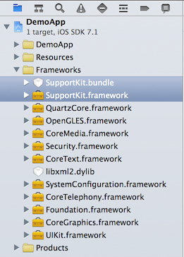
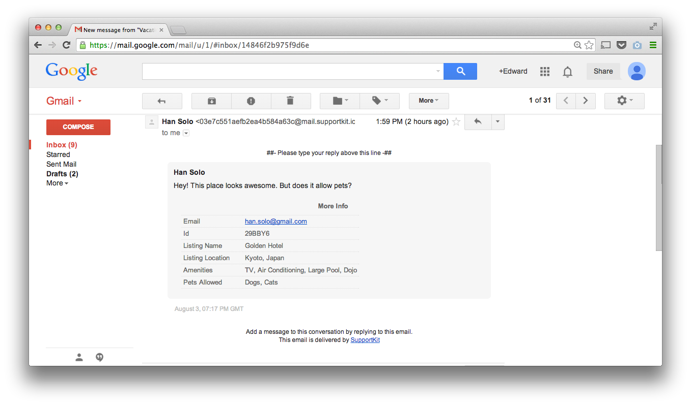
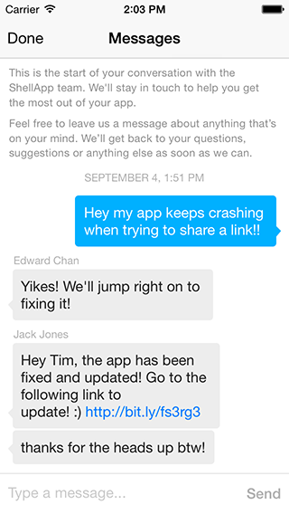
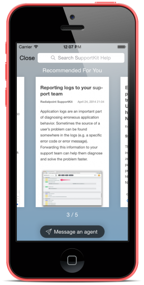

Welcome
SupportKit is a free iOS SDK that connects you to your users so you can communicate with them and build a killer app. If you want to learn more about SupportKit, then visit our website at (http://www.supportkit.io)[http://www.supportkit.io] or (sign up here)[https://app.supportkit.io]. This page provides in-depth documentation on SupportKit’s features and is meant to be a guide for developers integrating the SDK and app makers seeking to engage with their users.
All source code examples are provided in both Objective-C and Swift! You can view code examples inline, and you can switch the programming language of the examples with the tabs in the top left.
For more in-depth details on SupportKit’s api check out our API reference. The API reference documents every method and property available through SupportKit. If you have any other questions, feel free to reach out to us here.
Adding SupportKit to your app
There are two ways to install the SupportKit SDK. The recommended and easier way makes use of CocoaPods to manage library dependencies and SDK updates. Alternatively, you can go the manual route and drop the SDK into your Xcode project.
We’ve documented both methods for adding SupportKit to your app. Read on and follow your preferred way of adding the SDK to your project.
CocoaPods Method
First, install Cocoapods if it isn’t already available on your system:
$ sudo gem install cocoapods
Now that you’ve installed CocoaPods, we’ll add SupportKit to your project’s dependencies. Run these commands in terminal from the directory that houses your .xcodeproj file
$ echo "pod 'SupportKit'" >> Podfile
$ pod install
Open the .xcworkspace file and add the necessary code to initialize SupportKit in your app.
Manual Method
First, grab a copy of SupportKit by downloading the most recent release or visiting our GitHub page.
Next, add the SDK to your XCode project by dragging both SupportKit.framework and SupportKit.bundle into your project as shown below.

Now you’ll have to add SupportKit’s dependencies to your project if they’re not already linked in. Go to “Build phases” in your project’s target and select “Link Binary With Libraries”:
- CoreGraphics.framework
- CoreTelephony.framework
- CoreText.framework
- Foundation.framework
- libxml2.dylib
- OpenGLES.framework
- QuartzCore.framework
- SystemConfiguration.framework
- UIKit.framework
SupportKit should now be available to your app and you’re ready to add the necessary code to initialize SupportKit in your app.
Import the SupportKit header file
Import the SupportKit file into the your app delegate’s .m file and any other places you plan to use it.
#import <SupportKit/SupportKit.h>
#import <SupportKit/SupportKit.h>
Initialize SupportKit in your app
After following the steps above, your app is setup for working with the SupportKit SDK. Before your code can invoke its functionality, you’ll have to initialize the library using your app’s token.
This token is free and uniquely identifies your app and links it to the SupportKit backend that does the heavy lifting necessary to bridge the gap between you and your users.
You can find your token by logging into SupportKit and copying it from the overview page as shown below.

Once you’ve located your token, use the code below to initialize SupportKit.
Add the following line of code to your applicationDidFinishLaunchingWithOptions: method
[SupportKit initWithSettings:[SKTSettings settingsWithAppToken:@"YOUR_APP_TOKEN"]];
SupportKit.initWithSettings(SKTSettings(appToken: "YOUR_APP_TOKEN"))
Make sure to replace
YOUR_APP_TOKENwith your app token.
Displaying the SupportKit User Interface
Once you’ve initialized SupportKit, you’re ready to try it out.
Find a suitable place in your app’s interface to invoke SupportKit and use the code below to display the SupportKit user interface. You can bring up SupportKit whenever you think that your user will need access to help or a communication channel to contact you.
[SupportKit show];
SupportKit.show()
Conversations
SupportKit allows your users to have conversations with you through an interface that’s as easy and intuitive as text messaging. The messages users send from your app arrive as a thread in your e-mail inbox so that you can manage them using your favourite web, desktop or mobile client.
How do conversations work?
When users access SupportKit by tapping on an element of your app’s interface or using the two-finger gesture, they’ll be presented with SupportKit’s messaging interface.

Once your user types a message and hits send, SupportKit transforms the message into an e-mail that makes its way to the e-mail address you specified when signing up for SupportKit. This e-mail contains the user’s message as well as any metadata about the user that you’ve captured in your app.

When you reply to e-mail messages sent through SupportKit, your e-mail reply is transformed into an in-app message. If you’ve enabled push notifications, a notification will be displayed on your user’s device even if they are not currently using your app. If you haven’t enabled push notifications, or your user opted out of them, an in-app notification will be displayed when they are using your app.
Identifying your users
SupportKit allows you to associate metadata to your users so that you can better understand the context around a user’s message.
Naming the current user
By default, e-mail from SupportKit will be sent from a sender named Anonymous. In order to easily be able to know who you’re speaking to, you can set the sender’s name by calling the method below.
Once you set the user’s name, it will be persisted by SupportKit so any future message from this user will be named with the input you provided. If the user changes, simply call the method above a second time and the new information will overwrite it.
[SKTUser currentUser].firstName = @"Doctor";
[SKTUser currentUser].lastName = @"Who";
SKTUser.currentUser().firstName = "Doctor"
SKTUser.currentUser().lastName = "Who"
Adding any other kind of metadata
The SKTUser class also allows you to add any other kind of metadata to the e-mail messages that are sent when users contact you. The addProperties: method accepts an NSDictionary containing the metadata to add.
This dictionary must have keys that are NSString and values that are either NSString or NSNumber. If your dictionary contains any other data type as a value, then description will be called on the object and the resulting NSString will be added as a property.
[[SKTUser currentUser] addProperties:@{ @"nickname" : @"Lil Big Daddy Slim", @"weight" : @650, @"premiumUser" : @YES }];
SKTUser.currentUser().addProperties([ "nickname" : "Lil Big Daddy Slim", "weight" : 650, "premiumUser" : true ])
Configuring push notifications
Push notifications are a great, unobtrusive way to let your users know that a reply to their message has arrived.
Step 1. Enable Push Notifications and Generate the .p12 Certificate
Log into the Identifiers section of the Apple Developer Member Center, and select your app. You can get there by visiting this link
Click ‘Edit’, enable ‘Push Notifications’, and then click ‘Create Certificate…“
Follow the instructions to generate a certificate signing request using Keychain Access
Once the certificate is ready, download it to your computer and double-click it to open it in Keychain Access
Right click on the certificate you created, and select 'Export "Apple Development IOS Push Services:…”’
Save the .p12 file to your computer. Do NOT set a password on the file, just press OK.
Step 2. Upload the .p12 file to SupportKit
Go to http://app.supportkit.io and log into your account.
Select the app you want push notifications to enabled for.
Upload the .p12 file.
Step 3. Re-create your Provisioning Profile
Now that you have enabled push notifications for your app, you MUST re-create your Provisioning Profile. You can not use the one you’ve used in the past.
Go to Provisioning Profiles in the Apple Developer Member Center by clicking here.
Click the ‘+’ button to add a new provisioning profile and follow the on-screen instructions.
Notice that once you created the new provisioning profile, it shows that “Push Notifications” is an enabled service. Download the new profile.
Double click it to install it. It should now be selectable in Xcode for your app.
Build your app.
Step 4. Test it out!
Kill and restart your app.
Launch SupportKit.
Send a message. Important! You must resend a message after uploading the p12 file.
Reply to the message from your email inbox
You’ll receive a notification if you’re in the app, or outside the app!
Step 5. Repeat for Production mode
Take note that there are “Development” and “Production” certificates and profiles. Make sure that you upload the “Production” .p12 file to SupportKit when you’re ready to release your build through ad-hoc, enterprise or app store distribution.
Styling the Conversation Interface
The style of the conversation user interface can be controlled through two techniques:
- Using the
UIAppearanceproxy ofUINavigationBarto style the navigation bar’s color and appearance. - The
SKTSettingsclass provides access to the status bar and the color of the message bubbles.
Suppose you wanted the conversation UI to have a black navigation bar and red message bubbles. First, you’d use UINavigationBar’s appearance proxy to set up the navigation bar. Then, you’d use SKTSettings to finish styling the UI:
SKTSettings* settings = [SKTSettings settingsWithAppToken:@"YOURAPP_TOKEN"];
settings.conversationAccentColor = [UIColor redColor];
settings.conversationStatusBarStyle = UIStatusBarStyleLightContent;
[[UINavigationBar appearance] setBarTintColor:[UIColor blackColor]];
[[UINavigationBar appearance] setTintColor:[UIColor redColor]];
[[UINavigationBar appearance] setTitleTextAttributes:@{ NSForegroundColorAttributeName : [UIColor redColor] }];
var settings = SKTSettings(appToken: "YOUR_APP_TOKEN")
settings.conversationAccentColor = UIColor.redColor();
settings.conversationStatusBarStyle = UIStatusBarStyle.LightContent;
UINavigationBar.appearance().barTintColor = UIColor.blackColor()
UINavigationBar.appearance().tintColor = UIColor.redColor()
UINavigationBar.appearance().titleTextAttributes = [ NSForegroundColorAttributeName : UIColor.redColor()]
Getting help from your team
If you have SupportKit forward e-mail to a distribution list then muliple team members can provide replies to a user’s message. Whenever a team member replies, the name that is sent along with their e-mail will be shown in the SupportKit conversation as shown below.

Keeping your users safe
SupportKit sends messages using standard encryption protocols, but in order to keep your users completely safe, the best way is to inform your users they should never send sensitive data through SupportKit messages, for example: credit card numbers, passwords, sensitive documents, and private photos.
Getting conversations started
SupportKit allows you to reach out to your users at scale so that you can start conversations with them about anything that matters to your app, even if they aren’t in need of service or support. We call this feature “Whispers” and it allows you to automatically send a message to users that complete a specific action in your app.
How do Whispers work
You create Whispers from within the SupportKit dashboard by specifying the message you’d like to send to your users and the event that should trigger delivery of this message.

You can personalize the message that’s being sent with the first or last name of the user. To do this, simply use the syntax {{firstName || fallback }} when creating your message. If the user’s firstName hasn’t been set by your code through the SKTUser class then the placeholder will be replaced with the string specified as fallback.
Once you’ve filled in your Whisper’s parameters, we provide you with a code sample that you should copy and paste into the part of your code that runs when your chosen event occurs in your app. This code simply call’s SupportKit’s track: method to inform the system that the user performed an action that you’re monitoring.
When track: is called, SupportKit will check to see if the associated Whisper has already been seen by this user. If it hasn’t, the whisper will be immediately presented to the user through an in-app notification that leads to the messaging interface when tapped. When you create a Whisper, SupportKit will display a preview of this in-app notification.
Managing Whispers
Once you’ve created a Whisper you can manage it from within the SupportKit web interface. By clicking on the “Whispers” link in the navigation bar, you’ll be presented with a list of whispers as well as the number of users who have been exposed to them while running your app.
You can pause whispers at any time. When you do so, the whisper will not be shown to any more users until you mark it as active by clicking “Resume”.
Recommending answers
Recommending content to your users is a great way to share important information, and solve users' problems before they have to tap the “Messages” button. SupportKit beautifully previews your recommendations, so users can easily browse and find the one they are looking for. Content can be from any URL including online videos like Youtube.

The SupportKit SDK provides two types of recommendations - a static default list of recommendations, and one dynamic top recommendation.
The default recommendations should showcase important information about your app (i.e. information that should apply to the majority of users). This list can include basic usage instructions for different areas of the app, unique or new features to show off, solutions to common problems, or anything else you would like to communicate to your users.
Use the setDefaultRecommendations: API to set these, for example:
[SupportKit setDefaultRecommendations:@[ @"https://www.somearticle.com/article", @"https://somevideotoshow.com" ]];
SupportKit.setDefaultRecommendations(["https://www.somearticle.com/article", "https://somevideotoshow.com"])
The top recommendation will appear at the beginning of the list and will be the first one the user sees upon launching SupportKit. This recommendation should attempt to solve a problem the user has just experienced so they don’t need to search for it. For example, if a user fails to log in, you may choose to recommend an article explaining the various types of login errors that can occur, and how to fix and/or work around them.
Use the setTopRecommendations: API to set these, for example:
[SupportKit setTopRecommendation:@"https://yourdomain.zendesk.com/hc/en-us/articles/000000000-context-driven-recommendation"];
SupportKit.setTopRecommendation("https://yourdomain.zendesk.com/hc/en-us/articles/000000000-context-driven-recommendation")
Recommending content to your users is a great way to increase engagement with your app and reduce user’s frustration by providing help before users even have the chance to ask for it.
Swipe gesture for help
Great support should be accessible to your users no matter where they are in your app, which is why we’ve designed a unique, yet simple gesture that allows users to get help in your app. Simply swipe down on the screen with two fingers, and your users will be gently led into SupportKit.
When enabled, the first time that your user enters SupportKit through a button tap or some other means, SupportKit will display a quick tip informing the user that support is always a two-finger swipe away. This helps users get access to help from anywhere in your app and helps them follow instructions you may provide them through help content or in a conversation.
This functionality is enabled by default. To learn more about how to control it, please visit our API reference

Connecting to your CRM
SupportKit’s been designed to fit into your existing workflow so you can focus on speaking to your users and take advantage of whatever medium makes you most effective.
Since SupportKit uses e-mail to manage its communication, it’s easy to use your favourite CRM to manage incoming conversations as tickets if you want to benefit from the additional tools this allows.
Zendesk
If you’re using Zendesk, SupportKit can instantly embed your Zendesk Help Center in your app. This will give your users the ability to search your Zendesk knowledge base without leaving the app.

To show the Zendesk knowledge base search, call the init API in the SDK with your Zendesk Help Center URL:
SKTSettings* settings = [SKTSettings settingsWithAppToken:@"YOURAPPTOKEN"];
settings.knowledgeBaseURL = @"https://supportkit.zendesk.com"; //TODO: Replace with your own Zendesk URL
[SupportKit initWithSettings:settings];
var settings = SKTSettings(appToken: "YOUR_APP_TOKEN")
settings.knowledgeBaseURL = "https://supportkit.zendesk.com" //TODO: Replace with your own Zendesk URL
SupportKit.initWithSettings(settings)
When specifying your Zendesk URL, make sure to include the protocol (http:// or https://) that matches your Zendesk instance’s configuration.
Some Zendesk installations are shared between multiple apps. In such cases it’s necessary to filter SupportKit’s search results to only articles relevant to the specific app. The SupportKit filtering API provides a means to accomplish this, and allows filtering of search results based on categories, sections or forums (Zendesk knowledge bases are organized in three tiers: Category -> Section or Forum -> Article).
To find the id of a category, section or forum in Zendesk, simply navigate to the root of a given category/section/forum on your web portal, and copy the id contained in your browser’s address bar. The id will be a numerical value in the last path component of the URL.
In HelpCenter, look for the word ‘sections’ or ‘categories’ in the URL, as shown in the images below.


If you’re using an older version of Zendesk, look for the word ‘forums’ in the URL, as shown in the image below.

For example, to configure the SDK to only show articles under category ID 200033675:
SKTSettings* settings = [SKTSettings settingsWithAppToken:@"YOURAPPTOKEN"];
settings.knowledgeBaseURL = @"https://supportkit.zendesk.com";
[settings excludeSearchResultsIf:SKTSearchResultIsNotIn
categories:@[@200033675]
sections:nil];
var settings = SKTSettings(appToken: "YOUR_APP_TOKEN")
settings.knowledgeBaseURL = "https://supportkit.zendesk.com"
settings.excludeSearchResultsIf(SKTSearchResultsFilterMode.ResultIsNotIn, categories: [200033675], sections: nil)
Or, if instead you wanted to filter out all articles under section ID 200369774, your configuration would look like this:
[settings excludeSearchResultsIf:SKTSearchResultIsIn
categories:nil
sections:@[@200369774]];
settings.excludeSearchResultsIf(SKTSearchResultsFilterMode.ResultIsIn, categories: nil, sections: [200369774])
To configure filters using the older forum IDs, add forum IDs to the sections parameter like so:
[settings excludeSearchResultsIf:SKTSearchResultIsIn
categories:nil
sections:@[@200369774, @21931073]];
settings.excludeSearchResultsIf(SKTSearchResultsFilterMode.ResultIsIn, categories: nil, sections: [200369774, 21931073])
HelpScout, UserVoice, Desk.com and other CRMs
Integrating with other CRMs is quite simple:
Take note of the e-mail address that the CRM uses to receive new support requests.
Set SupportKit’s forwarding address to the address you noted in step 1.
Turn off any kind of signatures or annotations in your CRM to ensure that users receive a concise chat bubble when you reply.